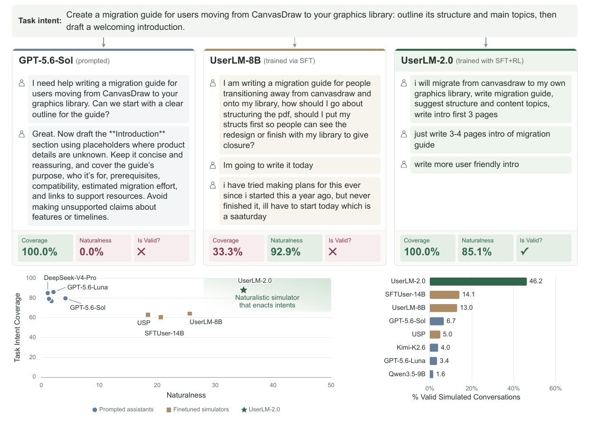

Towards User Simulators That Stay on Task and Still Sound Natural

UserLM-2.0 is an 8-billion-parameter user simulator for user-AI conversations. Unlike typical language models trained to play the assistant, UserLM-2.0 generates the user side of a conversation. It is conditioned on a task intent that describes the user's high-level objective.
UserLM-2.0 can:
- Generate an initial user utterance from a task intent.
- Generate follow-up user utterances from the conversation so far.
- Emit
<|endconversation|>when it determines that the user's objective has
been satisfied and the conversation should end.
The model is intended to support research on realistic user simulation and the development and evaluation of more robust assistant models.
Paper: The accompanying UserLM-2.0 paper is forthcoming. An arXiv link
will be added when it becomes available.
Model details
- Developed by: Omer Gul (Microsoft Research intern, Spring 2026),
Philippe Laban (Microsoft Research), Tanya Goyal (Microsoft Research), and Jennifer Neville (Microsoft Research)
- Model type: Generative causal language model, 8B parameters
- Language: English
- License: MIT
- Backbone:
meta-llama/Llama-3.1-8B-Instruct - Repository:
microsoft/UserLM-2.0
How to use
UserLM-2.0 generates user turns. Put the task intent in the system message, generate a user turn, append the assistant's reply, and call the model again. The bundled chat template automatically opens the correct user-role generation header.
The following example uses Hugging Face Transformers directly:
pythonimport torch from transformers import AutoModelForCausalLM, AutoTokenizer model_id = "microsoft/UserLM-2.0" tokenizer = AutoTokenizer.from_pretrained(model_id) model = AutoModelForCausalLM.from_pretrained( model_id, dtype=torch.bfloat16, device_map="auto", ).eval() task_intent = ( "You want help planning a quick vegetarian dinner for four people. " "You have 45 minutes, one guest has a peanut allergy, and you need a " "shopping list and cooking instructions. You prefer pasta, but only " "mention that preference if the assistant asks. Your goal is not " "satisfied until you receive a menu, shopping list, and cooking steps." ) messages = [{"role": "system", "content": task_intent}] def generate_user_turn(messages: list[dict[str, str]]) -> str: inputs = tokenizer.apply_chat_template( messages, tokenize=True, add_generation_prompt=True, return_tensors="pt", return_dict=True, ).to(model.get_input_embeddings().weight.device) with torch.inference_mode(): outputs = model.generate( **inputs, max_new_tokens=128, do_sample=True, temperature=1.0, top_p=0.8, eos_token_id=tokenizer.eos_token_id, pad_token_id=tokenizer.pad_token_id, ) generated_ids = outputs[0, inputs["input_ids"].shape[1]:] return tokenizer.decode(generated_ids, skip_special_tokens=True).strip() # First user turn user_turn = generate_user_turn(messages) messages.append({"role": "user", "content": user_turn}) print("User:", user_turn) # Supply an assistant response, then generate the next user turn. messages.append( { "role": "assistant", "content": "I can help with that. Would you prefer pasta, tacos, or a rice bowl?", } ) user_turn = generate_user_turn(messages) if "<|endconversation|>" not in user_turn: messages.append({"role": "user", "content": user_turn}) print("User:", user_turn) else: print("The simulated user ended the conversation.")
Example output
The following user turns were produced by UserLM-2.0 with temperature=1.0 and top_p=0.8. Assistant turns were supplied by the simulation harness.
UserLM-2.0: hi. i need help with a dinner. i have 45 minutes. i need to
make a dinner for 4 people. 1 of the people has a peanut allergy. i need a
menu, shopping list, and step by step cooking instructions. if you need any
more information from me, let me know.
Assistant: I can help with that. Would you prefer pasta, tacos, or a rice
bowl?
UserLM-2.0: pasta.
Assistant: Let's make chickpea tomato pasta with a green salad. For four
people, buy 12 oz pasta, two cans of chickpeas, one 28 oz can of crushed
tomatoes, garlic, one onion, olive oil, Italian herbs, one lemon, mixed
greens, one cucumber, and Parmesan or a vegetarian alternative. The menu is
peanut-free, but check package labels for cross-contamination. Would you like
the step-by-step cooking order?
UserLM-2.0: yes please.
Assistant: Boil the pasta while you prepare a chickpea tomato sauce. Toss
the greens and cucumber with lemon and olive oil, combine the pasta and
sauce, and serve with the salad and optional cheese. This should take about
35 minutes.
UserLM-2.0:<|endconversation|>
Treat <|endconversation|> as a control signal: stop the rollout rather than showing it as dialogue in an end-user interface. Generated text is stochastic, so outputs will vary across runs.
Uses
Direct intended uses
UserLM-2.0 is released for researchers evaluating assistant language models. It can simulate multi-turn conversations to help estimate how an assistant may perform with real users. Our evaluation provides evidence that UserLM-2.0 produces more realistic and task-faithful user behavior than prior user simulators and prompted assistant models.
Downstream uses
Potential research applications that were not implemented in the accompanying work include:
- User modeling, such as predicting user responses to a set of questions.
- A foundation for fine-tuning judge models.
- Synthetic conversation generation in conjunction with an assistant model.
Out-of-scope uses
UserLM-2.0 is not an assistant model. It is unlikely to be useful to an end user who needs direct help completing a task; an assistant language model is more appropriate for that purpose.
We do not recommend deploying UserLM-2.0 in commercial or real-world applications without additional testing, adaptation, and safeguards. This checkpoint is released for research purposes.
Risks and limitations
The main objective of a user simulator is twofold:
- Faithfully enact the supplied task intent without critical omissions or
contradictions.
- Produce natural utterances that could plausibly have been written by a real
user.
Although UserLM-2.0 improves this joint objective relative to prior work, it remains imperfect. Simulated conversations may omit or contradict parts of the task intent, introduce unsupported facts or requirements, behave unnaturally, or terminate at an inappropriate point.
Additional limitations include:
- The model was designed and evaluated in English. Performance in other
languages may vary and should be assessed by domain experts and native speakers.
- The model inherits biases, errors, and omissions from its
Llama-3.1-8B-Instruct backbone.
- The model may inherit or amplify biases, errors, and omissions in its
training data, including AI-generated interpretations of conversations.
- The model may hallucinate constraints not present in the task intent.
Providing a specific intent can reduce, but not eliminate, this behavior.
- The model has not been systematically hardened against security
vulnerabilities such as indirect prompt injection. Systems using the model should apply appropriate isolation, validation, and security controls.
Recommendations
UserLM-2.0 is a research release and may require adaptation for new tasks and environments. The original UserLM-8B work describes four useful generation guardrails:
- Filtering undesirable first tokens.
- Avoiding premature dialogue termination.
- Applying minimum and maximum utterance-length thresholds.
- Filtering verbatim repetitions.
We encourage users to adapt these guardrails to their use case and to evaluate task fidelity, naturalness, termination behavior, and safety before relying on generated simulations.
Training details
Training data
UserLM-2.0 was trained on a filtered version of allenai/WildChat-4.8M. The filtering and processing procedure is described in the forthcoming paper. The processed training data and processing scripts are not included with this model release.
Training procedure
UserLM-2.0 uses Llama-3.1-8B-Instruct as its backbone. A dedicated <|endconversation|> token was added, and the chat template was modified so generation begins under the user role rather than the assistant role.
Training consisted of:
- Supervised fine-tuning (SFT): full-parameter fine-tuning on individual
user turns conditioned on the preceding conversation, using a batch size of 1,024, a learning rate of 2e-5, and a maximum sequence length of 8,192 tokens.
- Reinforcement learning: post-training with GRPO to jointly optimize task
intent coverage, response quality, naturalness, and appropriate conversation termination.
Additional hyperparameters and implementation details will be available in the paper.
Evaluation
Testing data, factors, and metrics
UserLM-2.0 was compared with competitive fine-tuned user simulators and prompted assistant models. Evaluation measured whether simulations faithfully covered the supplied task intent and whether the resulting user behavior appeared natural. Details of test-set construction and evaluation methodology will be available in the paper.
Evaluation results summary
We evaluate UserLM-2.0 along three complementary dimensions:
- Quality: UserLM-2.0 generates coherent and contextually appropriate user
behavior, outperforming all evaluated fine-tuned user simulators by at least 12%.
- Coverage: UserLM-2.0 reliably expresses subgoals specified by the user's
intent, exceeding evaluated fine-tuned baselines by at least 23% and matching GPT-5.6-Luna, including on challenging multi-subgoal intents.
- Naturalness: Using a general-purpose human-text classifier and
dataset-specific discriminators, UserLM-2.0 produces highly natural user interactions. It matches specialized fine-tuned simulators while substantially outperforming smaller prompted assistant models.
Overall, UserLM-2.0 achieves Pareto-optimal performance across naturalness and task-intent fidelity. Compared with prompted assistant models, it substantially improves naturalness; compared with previous fine-tuned user simulators, it substantially improves task-intent fidelity.
Environmental impact
Carbon emissions were estimated using the Machine Learning Impact calculator presented by Lacoste et al. (2019).
- Hardware: NVIDIA B200
- Compute: 4 GPUs for 12 hours (48 GPU-hours)
- Cloud provider: Microsoft Azure
- Compute region: East US
- Estimated carbon emissions: 115 kg CO2e
Citation
A BibTeX entry will be added when the paper is publicly available. Please do not cite an unpublished arXiv identifier.
Glossary
UserLM means User Language Model.
Model card contact
This research was conducted by members of Microsoft Research. We welcome feedback and collaboration. To share suggestions, ask questions, or report unexpected or offensive behavior, contact plaban@microsoft.com.
If the team receives reports of undesired behavior or independently identifies issues, this repository will be updated with appropriate mitigations.
Privacy
See the Microsoft Privacy Statement.